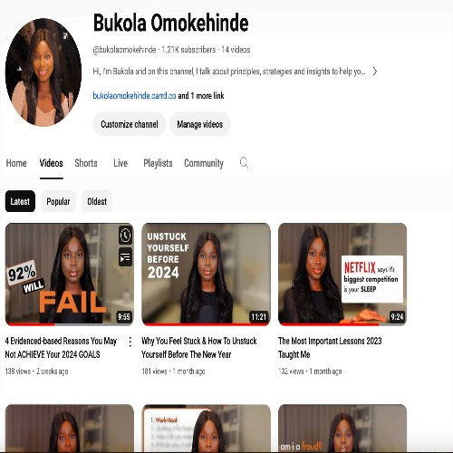

Profile
Highly motivated professional with 2+ years of experience delivering solutions in strategy, programme management, and organisational transformation. Proven ability to drive results through strong analytical thinking, problem-solving, and client collaboration. Currently pursuing an MSc in Organisational Psychology to further enhance my expertise in team performance optimisation and organisational health to effectively support client engagement.
Back to homepageAchievements/Awards
Cornell Certificate in Women Entrepreneurship
Awarded UK Global Talent Visa for impact in the Ed-Tech Scene in Africa
Associate Member, Chartered Institute of Personnel Development (CIPD)
CEO Shadowing Scheme Awardee (Tony Elumelu Foundation)
World Bank Certificate with Distinction: The Future of Work
University of Lagos Scholarship Award for Academic Excellence
Most Outstanding Student Leader, Impact Leaders Club, Lagos
Projects
View selected projects below. More information can be found at peakperformancenewsletter.com
Work Experience
Programme Manager, Middle East and Africa (Recruiting)
Palantir Technologies
June 2022 - March 2023
Job summary goes here. Add as many paragraphs as you need.
- Provided strategic partnership & stakeholder management to over 50 Engineering Managers, Mentors and Interns in the UK and US to drive individual and team success.
- Led and delivered business change initiatives to optimise hiring practices in the Middle East and Africa, aligning recruitment strategies with the organisation's transformation agenda.
- Analysed and visualised data with tools such as Excel and Tableau to inform decision-making in workforce planning, talent acquisition, and recruitment strategy.
- Owned, designed, and executed five pioneering diversity partnership projects in the Middle East and Africa region resulting in a 325% increase in diverse candidates from application to offer
Education
University of London - United Kingdom
2024
MSc Organisational Psychology
Organisation Transformation, Organisation Design and Development and Change Management